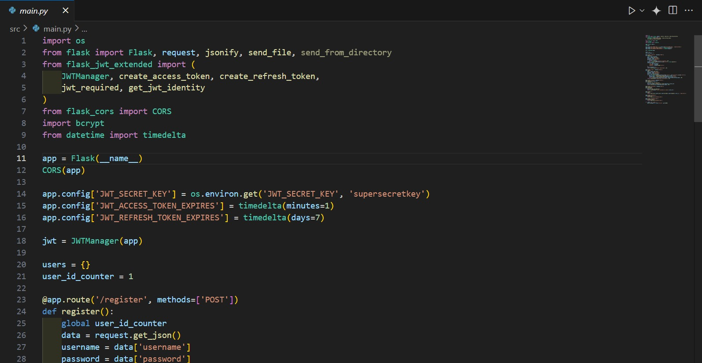
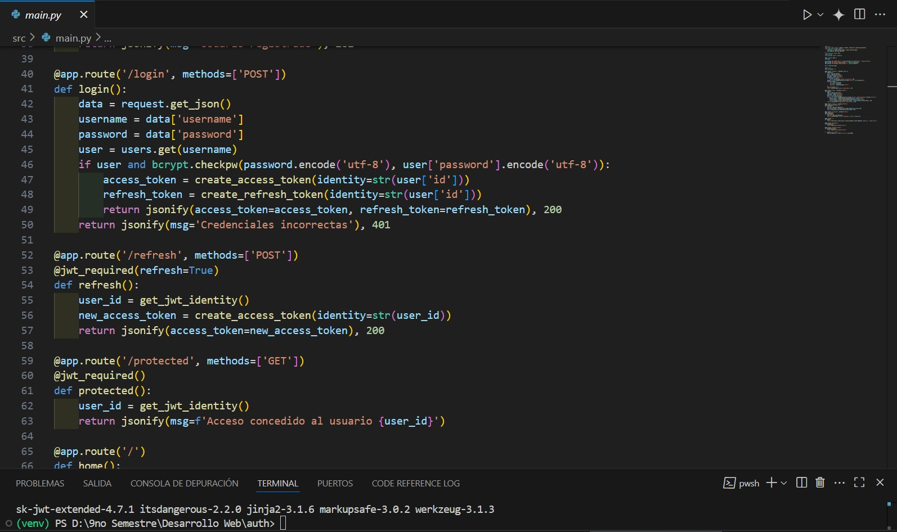
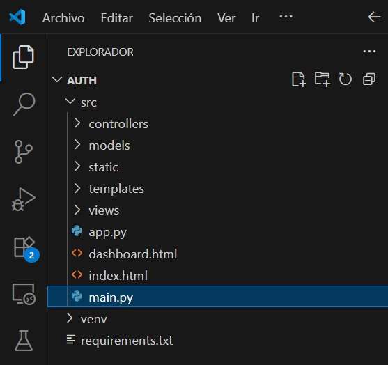
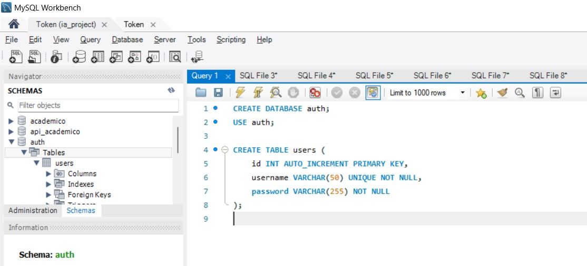
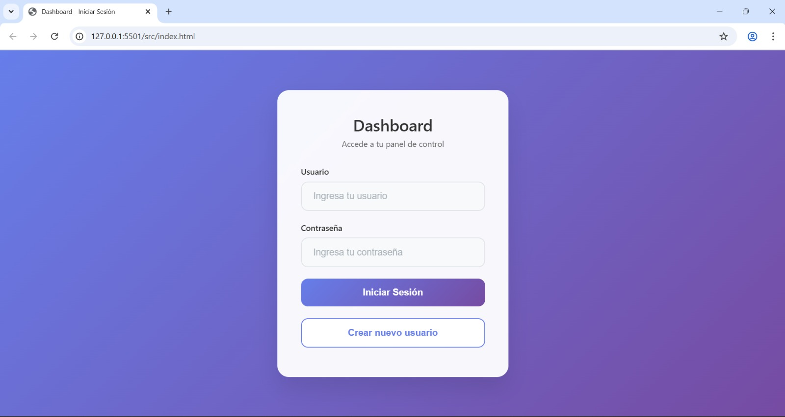

Desarrollo Backend - Arquitectura y Principios

Definición y Conceptos Clave
El desarrollo de aplicaciones para internet se basa en la arquitectura cliente-servidor, dividiéndose en FrontEnd (Side-Client) y BackEnd (Side-Server).
Tipos de Arquitectura:
Arquitectura C/S Clásica - Múltiples Páginas (MPA):
Webs tradicionales con múltiples páginas, cada una con sus archivos HTML, CSS, JS y recursos, conectadas por enlaces.
Arquitectura C/S Multicapa - Múltiples Páginas:
Separa sistemas de software complejos en capas según responsabilidades, utilizando el Modelo MVC (Modelo, Vista, Controlador).
Arquitectura C/S Multicapa - Página Única (SPA):
El servidor solo tiene una página HTML, los estilos y formatos se cargan en el cliente en el primer acceso. JavaScript gestiona la navegación entre componentes.
Arquitectura C/S Multicapa - SPA / MPA - Híbridas:
Combinan características de SPA (como componentes con Next JS) con un enfoque multipágina.
Arquitectura Hexagonal (Puertos y Adaptadores):
Separa la aplicación en capas distintas con responsabilidades propias, permitiendo evolución y testeo independientes. Los puertos definen puntos de entrada/salida y los adaptadores implementan la conexión.
Servidores Web, Hosting y Cloud Computing
Servidor Web:
Un equipo que almacena archivos de un sitio web y los transmite a los usuarios vía HTTP.
Hosting:
Un servicio de alojamiento web que hace accesible el contenido de tu web y correo electrónico en internet.
Cloud Hosting:
Agrupa recursos de computación de una red de servidores, ofreciendo escalabilidad y flexibilidad.
Cloud Computing:
Proporciona recursos de computación bajo demanda a través de internet, evitando la gestión de infraestructura.
Nombre de Dominio Web / DNS:
La dirección única de un sitio web en internet.
Configuración de Servidores Web:
El proceso de optimizar un servidor para gestionar solicitudes HTTP de forma eficiente y segura.
Funcionamiento del Server Side:
El servidor procesa solicitudes del navegador, ejecuta código (PHP, Node.js, Python), interactúa con bases de datos y genera una respuesta para el cliente.
Autenticación Basada en Tokens
Es un método de verificación de identidad que permite a los usuarios acceder a sistemas sin proporcionar credenciales constantemente, mediante la emisión de un token cifrado.
1. Generación del Token:
Se crea un token único al iniciar sesión.
2. Uso del Token:
El token se incluye en las peticiones al servidor.
3. Validación del Token:
El servidor verifica la validez del token.
4. Expiración y Renovación:
Los tokens tienen duración limitada.
5. Seguridad:
Tokens cifrados y firmados digitalmente.
Tipos de Tokens:
- JSON Web Token (JWT)
- OAuth Tokens
- SAML Tokens
Ejemplos Prácticos y Capturas
A continuación se muestran ejemplos prácticos de las tecnologías y conceptos aprendidos:
📸 Captura 1: Configuración de servidor web
Configuración y setup de servidor web con Apache/NGINX
📸 Captura 2: Implementación de autenticación JWT
Código de implementación de JSON Web Tokens para autenticación
📸 Captura 3: Arquitectura MVC en acción
Estructura de proyecto siguiendo el patrón Modelo-Vista-Controlador
📸 Captura 4: Configuración de base de datos
Setup y configuración de base de datos para la aplicación backend
📸 Captura 5: Vista localhost del proyecto
Aplicación backend funcionando en localhost mostrando la interfaz web
Tecnologías Aprendidas
Tecnologías y Software de Servidores Web:
- Java EE, Jakarta EE
- Servidores Web: Apache HTTP Server, NGINX, Microsoft IIS, Apache Tomcat, Node.js
- Stacks de desarrollo: LAMP/LEMP, MEAN/MERN, XAMPP, WAMP
- Proveedores de Cloud Hosting: Azure, AWS, Google Cloud Platform
- Registradores de Dominios: Wix, Domain.com, Namecheap, Bluehost, GoDaddy, Google Domains, HostGator
Lenguajes de Programación Backend y Frameworks:
- Lenguajes: PHP, Node.js, Python
- Tecnologías Java: Servlets, JavaServer Pages (JSP)
- Otros frameworks: ASP.net, .NET Framework, Ruby, Rails, Sinatra, Express, Koa, Sail.js, Nest.js
Gestores de Base de Datos:
- SQL y gestores de bases de datos
Herramientas de Construcción y Desarrollo:
- Maven: Herramienta de gestión de proyectos Java para dependencias, compilación, empaquetado
- Gradle: Herramienta de gestión de proyectos para Java, Groovy o Scala
- OpenJDK: Para la instalación de JDK
- IntelliJ IDEA Community Edition: Entorno de Desarrollo Integrado (IDE)
Requisitos para el Server Side:
- Sistema Operativo
- Software de Servidor Web
- Lenguaje de Programación Backend
- Sistema Gestor de BD
- Herramientas de desarrollo
Código Fuente y Recursos
Ver Código Fuente Completo
Accede al repositorio completo con todos los ejercicios, ejemplos prácticos y código fuente de la Semana 9 - Desarrollo Backend.
📁 Contenido del Repositorio
-
Ejemplos de Arquitecturas
Implementaciones de MVC, SPA, MPA y Arquitectura Hexagonal
-
Sistema de Autenticación JWT
Código completo de implementación de JSON Web Tokens
-
Configuraciones de Servidor
Scripts y archivos de configuración para Apache, NGINX y Tomcat
-
Conexiones a Base de Datos
Ejemplos de conexión y consultas SQL con diferentes gestores
-
Documentación Técnica
Guías detalladas y comentarios explicativos del código
Reflexión Personal
Esta semana marcó un punto de inflexión en mi comprensión del desarrollo web. Pasar del frontend al backend me permitió entender la arquitectura completa de las aplicaciones web modernas.
El aprendizaje de las diferentes arquitecturas (MPA, SPA, Híbridas y Hexagonal) me dio una perspectiva amplia sobre cómo estructurar aplicaciones según sus necesidades específicas. La arquitectura hexagonal, en particular, me enseñó la importancia de la separación de responsabilidades y la testabilidad del código.
La implementación de autenticación basada en tokens, especialmente JWT, me mostró cómo manejar la seguridad de manera eficiente en aplicaciones modernas. Comprender el flujo completo desde la generación hasta la validación del token me dio confianza para implementar sistemas de autenticación robustos.
El trabajo con diferentes stacks de desarrollo (LAMP, MEAN, MERN) y herramientas como Maven y Gradle me preparó para trabajar en diversos entornos de desarrollo. La experiencia con servidores web como Apache, NGINX y la configuración de hosting en la nube me dio una visión práctica de cómo desplegar aplicaciones en producción.
Esta semana consolidó mi transición de desarrollador frontend a desarrollador full-stack, proporcionándome las bases sólidas necesarias para construir aplicaciones web completas y escalables.